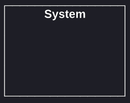
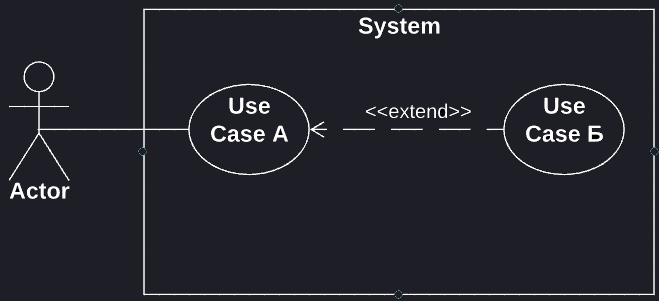
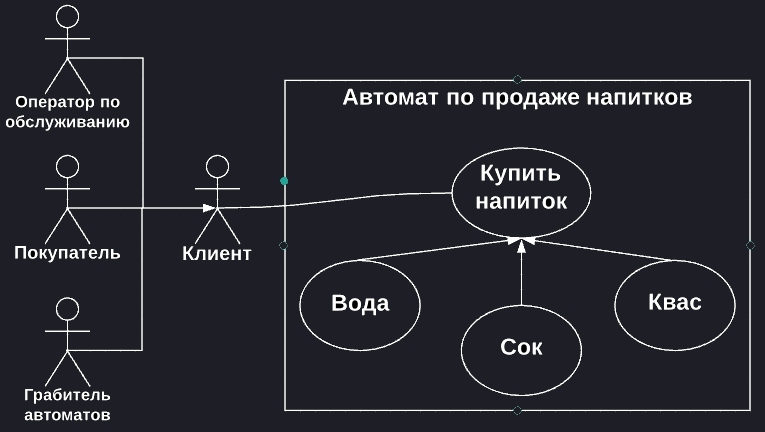

- В чем идея UML?
- Как использовать
- 1. Use Case
- 2. Class
- 3. Object
- 4. Sequence
- 5. Communication
- 6. Statechart
- 7. Activity
- 8. Deployment
Предназначение UML
Каждая компьютерная программа создается с определенной целью.
В общем случае, есть заказчики - люди, которым требуется некая программа для личного использования, и разработчики - люди, которые эти программы для них пишут.
Процесс создания типичной программы делится на два этапа - проектирование и разработка.
Проектирование - это процесс планирования, отвечает на вопросы: каковы наши цели - зачем мы делаем данную программу? Как мы реализуем поставленные задачи? Как программа будет работать?
Проектирование позволяет достичь понимания между пожеланиями заказчика и тем, как это представляет себе непосредственно разработчик.
Так, заказчик может сразу же представить себе, какой окажется его будущая программа (и сразу внести необходимые правки), а разработчику позволяет выделить и сконцентрироваться на выполнении приоритетных задач, минимизировав количество необходимых доработок в дальнейшем.
При этом становится очевидно, что при отсутствии подобного предварительного проектирования, количество разногласий между заказчиком и разработчиком будет неустанно расти уже с самого начала.
А к чему это приведет? К потери времени - из-за постоянных правок, когда заказчик регулярно требует сделать не так, а эдак, что-то изменить. К потери финансов - ввиду недопонимания между тем, что уже сделал разработчик (люди работали-старались, а оказывается зря), и тем, каким это себе представлял заказчик.
А потому, никогда не следует пренебрегать проектированием, пусть даже речь идет о самом маленьком одностраничном веб-сайте.
Но с чего начинать проектирование? Во-первых, существует множество различных подходов к проектированию. Каждый такой подход может иметь как преимущества, так и недостатки перед другими. В зависимости от конкретной программы, сложности ее реализации, могут быть использованы те или иные подходы. И одним из таких подходов, является проектирование при помощи UML.
Каким образом работают с UML
Во-первых, следует сказать, что в результате процесса проектирования будущей программы получают ее информационную модель.
Информационная модель, в свою очередь, это подробное описание различных аспектов функционирования программы. Это своего рода структурированная информация, которая описывает, что вообще из себя представляет конкретная программа и как она работает.
Если говорить конкретно о UML, то здесь информационная модель выражается в виде совокупности различных диаграмм, которые необходимо создать. Для этой цели в UML имеется ряд правил, следуя которым можно создавать различные виды диаграмм. При этом, нужно отметить, что каждая отдельная диаграмма описывает будущую программу с определенной стороны.
Вся идея UML как раз и состоит в том, что совокупность этих диаграмм как раз и будет являться информационной моделью будущей программы.
UML - это графический язык моделирования, который имеет стандарт и спецификацию. Специально для проектирования на UML, разработаны множество прикладных решений, и основное их различие состоит в том, что одни из них - это просто программы для рисования диаграмм с соответствующим набором инструментов (почти что тот же Paint, только ориентированный на рисование диаграмм), а другие являются профессиональными решениями, в полной мере поддерживающими спецификацию UML.
Соответственно, диаграммы созданные в paint-подобных программах являются не более, чем обычными картинками, в то время как диаграммы в профессиональных программах являются помимо прочего еще и семантически корректными, то есть несут не только визуальный смысл, но и адекватно соотносятся со спецификацией.
Диаграмма прецедентов ~Use Case
-
Обозначения
Система
Это непосредственно продукт разработки: либо сама программа в целом, либо какая-то ее отдельная часть, либо описание некоего процесса, например, описание процедуры взаимодействия пользователя с этой программой.
Название системы указывается внутри элемента сверху.
Символьное обозначение:

Актер
Это может быть человек, другая система, техническое устройство, организация (третьи лица), которые определенным образом используют функционал нашей системы для достижения собственных целей.
Под иконкой указывается имя актера. Актеров следует воспринимать как категории, а не как отдельные элементы (то есть НЕ "пользователь" - а "пользователи ВООБЩЕ"). Актеры всегда располагаются за пределами системы, поскольку они взаимодествуют с системой, не являясь ее частью. При этом те актеры, что инициируют взаимодействие с системой, располагаются слева от нее, а те, которых в свою очередь система использует для достижений целей других - справа.
Символьное обозначение:

Прецедент
Это определенное действие, что выполняет некоторую задачу в системе (поэтому на диаграмме всегда располагается внутри нее).
Внутри прецедента в глагольной форме указывается действие, которое он характеризует. Прецеденты должны, по возможности, располагаться в логической последовательности по направлению сверху-вниз.
Символьное обозначение:
Отношения
Это связи между актерами и прецедентами, которые показывают, каким именно образом актер осуществляет взаимодействие с системой. Каждый актер должен быть связан с хотя бы одним прецедентом. Существует 4 типа отношений
Assoсiation (ассоциация)
Характеризует простейшее взаимодействие между актером и прецедентом.
Символьное обозначение:
Отношение Include (включение)
Используется в тех случаях, когда нужно показать, что прецедент "А" выполнится только тогда, когда выполнится включенный в него прецедент "Б".
Символьное обозначение:

Отношение Extend (расширение)
Используется в тех случаях, когда нужно показать, что прецедент "А" выполняется всегда, а расширяемый прецедент "Б" может как выполнится, так и не выполнится в зависимости от некоторых условий.
Символьное обозначение:

Отношение Generalization (обобщение)
Используется для детализации поведение актера или прецедента. При этом каждый детализированный прецедент/актер хоть и разделяет общее поведение с основным, однако добавляет некоторые детали.
Символьное обозначение:

Прецедент с точками расширения
Прецедент, на котором дополнительно указываются т.н. точки расширения - для того, чтобы представить отношение extend более детально. Также указывается условие расширения с помощью специальной подсказки.

-
Задачи
Задача (1)
Актор User взаимодействует с системой OnlineTranslator в рамках варианта использования Translate. Варианты использования TranslateText и TranslateWebPage уточняют Translate. Отобразите на диаграмме.
а. Вариант использования TranslateWebPage включает «include» вариант использования SetURL.
б. Вариант использования SetLanguages расширяет «extend» вариант использования Translate в точке расширения specifyLaguages. Условие расширения «язык не определен автоматически».
в. Добавьте в модель актора ExperiencedUser, уточняющего User. ExperiencedUser может взаимодействовать с системой в рамках варианта использования ProposeTranslation, который уточняет вариант использования TranslateText.
Решение (1)
Различие между включением одним вариантом использования другого варианта использования и расширением вариантом использования другого варианта использования состоит в направлении зависимости между вариантами использования и в том, какой из них определяет условия расширения или включения. В случае включения эти условия определяет включающий вариант использования. В случае расширения – расширяющий.
Задача (2)
Автор Author направляет статью SendPaper редактору журнала Editor. Редактор передает статью на рецензирование Review нескольким рецензентам Reviewer. Затем редактор возвращает отзывы рецензентов автору в том же варианте использования SendPaper.
а. Добавьте возможность автору вместе с корректором ProofReader подготовить статью к публикации PrepareForPublishing.
б. Доработайте модель, укажите, что подготовка статьи к публикации выполняется, только если она была одобрена редактором в варианте использования SendPaper.
Решение (2)
В условии указан основной актер Author, который взаимодействует с системой в варианте использования SendPaper. Вспомогательным актером является редактор Editor. Получив статью, редактор инициирует взаимодействие в варианте использования Review, в котором также участвует еще один актер – рецензент Reviewer. Так как взаимодействие в рамках SendPaper приводит к выполнению рецензирования Review, между этими вариантами использования имеется отношение включения.
Автор не участвует в рецензировании, поэтому ассоциация актора Author с вариантом использования Review не указана. Отношение включения указано стрелкой в направлении от базового варианта использования SendPaper к включаемому Review.
В пункте а) в модель нужно добавить возможность подготовки статьи к публикации с участием автора и корректора. Добавляемая возможность моделируется вариантом использования PrepareForPublishing, в котором участвуют актер Author и новый актер Proofreader. При этом не указывается, каким именно образом происходит подготовка статьи к публикации.
В условии пункта б) указано, что подготовка статьи к публикации, то есть вариант использования PrepareForPublishing, выполняется только при определенном условии: статья была одобрена редактором. При этом не указано, что подготовка статьи к публикации необходима для рассмотрения статьи, поэтому правильно будет указать, что вариант использования PrepareForPublishing расширяет вариант использования SendPaper. Для того, чтобы правильно показать отношение расширения, в вариант использования SendPaper была добавлена точка расширения PaperIsApproved. Для отношения расширения указано условие Condition, в фигурных скобках приведено логическое выражение, проверяемое в точке расширения. Если выражение истинно, то расширение происходит, если ложно, то расширения не происходит. Приведенная форма записи отношения расширения является полной. В случае, когда у варианта использования имеется только одна точка расширения или условие расширения несущественно для целей моделирования, можно опустить соответствующие элементы модели.

Задача (3)
Распознавателю текста OCR от модуля морфологии нужны возможность определить, принадлежит ли слово языку, и функция приведения слова к заданной форме, в частности, восстановления начальной формы. Также нужна функция получения грамматического значения конкретного слова
а. Постройте модель модуля, выделите акторов, варианты использования и укажите отношения между ними.
б. Добавьте функцию вывода слов, похожих на введенное, если его нет в словаре языка. Каким образом данная возможность системы связана с другими функциями?
в. Укажите в модели, что все перечисленные задачи подразумевают выполнение поиска слова (или его основы) в словаре.
г. Некоторые языки могут не поддерживаться системой. Перед выполнением любой функции модуля морфологии нужно проверить, поддержан ли язык. Отобразите это в модели.
Решение (3)
а. Актер OCR ассоциирован с вариантами использования: проверка слова CheckWord, приведения к определенной форме SetForm, восстановление нормальной формы GetOriginalForm, получение грамматического значения GetGrammarDefinition. GetOriginalForm уточняет SetForm.
б. Добавить вариант использования ShowSimilar, расширяющий CheckWord в точке ExistInDictionary. Связать его с OCR.
в. Добавить абстрактный use case DictSearchingAlgorythm (это такой use case, который не вызывается напрямую актерами, но вызывается другими use case'ами) для CheckWord, ShowSimilar, SetForm и GetGrammarDefinition, а также вариант использования SearchWord, включаемый в DictSearchingAlgorythm.
г. Добавить вариант использования проверки поддержи языка, и включить его в DictSearchingAlgorythm.
Задача (4)
Пользователь User настраивает подключаемые модули аудиоплеера AudioPlayer в рамках прецедента ConfigurePlugins.
а. Добавьте к варианту использования ConfigurePlugins возможность выбора определенного модуля для настройки SelectPlugin и возможность настройки конкретного модуля ChangeSettings .
б. Добавьте в модель возможность обновить подключаемые модули UpdatePlugins с внешнего сервера PluginsServer.
в. Помимо обычного пользователя в системах обычно есть привилегированный пользователь SuperUser, который имеет права на изменение конфигурации системы. В системе аудиоплеера такой пользователь может обновить модули UpdatePluginsList. Обновление включает в себя удаление DeletePlugin, установку InstallPlugins и просмотр списка доступных на сервере CheckPluginsList .
Решение (4)
а. Добавить вариант использования SelectPlugin, расширяющий ConfigurePluigns в точке расширения select, и вариант использования ChangeSettings, расширяющий в точке расширения config. Связать оба варианта использования с User.
б. Добавить актора PluginsServer, вариант использования UpdatePlugins и связать их ассоциацией.
в. Добавить актора SuperUser, уточняющего User. Добавить вариант использования UpdatePluginsList, который включает варианты использования DeletePlugin, InstallPlugins, CheckPluginList. Последний вариант использования связать с PluginsServer.
Задача (5)
Клиент Client выполняет операции над своими счетами в банке Bank , используя банкомат ATM в рамках абстрактного варианта использования PerformOperation , который включает информирование об услугах в варианте использования InformAboutServices . Для выполнения операций ATM обращается к платежной системе PaymentSystem .
а. Перечислите основных и вспомогательных акторов системы ATM . Какие из них взаимодействуют с системой в варианте использования PerformOperation ?
б. Отразите в модели вариантов использования, что клиенты могут только выполнять операции по получению наличных, в то время как клиенты BankCustomers банка, владеющего банкоматом, могут также оплачивать услуги из списка, предоставляемого банком Bank . При этом сценарии оплаты услуг и получения наличных отличаются между собой, но следуют общему сценарию выполнения операций.
в. Добавьте возможность получения наличных как в валюте счета, так и в другой валюте. При этом в обоих случаях банкомат запрашивает у клиента Client подтверждение на списание средств в валюте счета по курсу банка Bank .
Решение (5)
а. Основной актор Client. Вспомогательный актор Payment-System. Оба актора взаимодействуют с системой в рамках варианта использования PerformOperation.
б. Добавить актора BankCustomer, который уточняет Client. Создать два конкретных варианта использования: получить наличные GetCash и оплатить услуги PerformPayment. Оба варианта использования сделать потомками PerformOperation. Наконец, нужно добавить ассоциацию между Client и GetCash и ассоциацию между BankCustomer и PerformPayment.
в. Нужно добавить в GetCash точку расширения Another-Currency варианта использования ChooseCurrency расширяет GetCash в точке расширения AnotherCurrency. GetCash включает в себя вариант использования ConfirmOperation, в котором реализовано подтверждение списания средств.
Задача (6)
Во время подготовки данных для морфологического модуля лингвист Linguist взаимодействует с системой подготовки данных MorphoDPS с целью изменения данных ModifyData . Кроме того, для проверки целостности модифицируемых данных лингвисты могут компилировать данные Compile. Компиляция также включает в себя экспорт данных ExportData в формат, понимаемый компилятором. Каждую ночь сервер сборки приложения BuildServer компилирует данные Compile .
а. Добавьте в систему программиста Programmer , которому доступны те же возможности, что и лингвисту. Кроме того, он может экспортировать данные ExportData для отладки подсистемы компиляции данных.
б. Укажите, что для повторного использования словаря, который хранится на сервере данных морфологии, модуль семантики Semantics может взаимодействовать с системой подготовки данных морфологии в варианте использования ExportWordList .
в. Добавьте функции изменения данных: добавление, изменение и удаление слова.
г. Добавьте в модель возможность при изменении данных в некоторых случаях проверять целостность данных перед сохранением в систему.
д. Будет ли проверяться целостность данных при удалении слова? Ответ поясните.
Решение (6)
а. Добавить актора Programmer, уточняющего Linguist. Добавить и связать ассоциацией с Programmer вариант использования ExportData для MorphoDPS.
б. Добавить вариант использования ExportWordList, уточняющий ExportData. Добавить актора Semantics, и связать его с ExportWordList.
в. Добавить три конкретных варианта использования, уточняющие ModifyData: AddWord, ModifyWord, RemoveWord.
г. Добавить вариант использования CheckIntegrity, расширяющий ModifyData в точке расширения verify.
д. Будет, если выполняется условие расширения.
Задача (7)
Инкассатор Cashier и заправщик Loader занимаются обслуживанием автомата с газировкой. В обязанности инкассатора входит сбор денег CollectCash, а заправщик загружает в автомат баллоны с водой ChangeWater и газом ChangeGas .
а. Выделите в модели общий сценарий обслуживания, который включает авторизацию в системе обслуживания автомата и завершение сессии обслуживания.
б. Укажите, что автомат также может быть заправлен сиропом.
в. В каком случае инкассатор может загрузить в автомат баллон с водой? Ответ поясните.
г. Отразите в модели, что инкассатор может наблюдать за автоматом через Интернет с помощью встроенной видеокамеры с включением по сигналу датчика присутствия здания.
Решение (7)
а. Добавить варианты использования авторизация Authorization, завершения сессии EndSession, абстрактный вариант использования обслуживания Maintenance. Maintenance включает Authorization, EndSession. Варианты использования CollectCash, ChangeWater, ChangeGas уточняют Maintenance.
б. Добавить вариант использования заправить сиропом ChangeSyrop, уточняющий Maintenance. Loader связан ассоциацией с ChangeSyrop.
в. Может, если выполняет роли обоих акторов Cashier и Loader.
г. Добавить вариант использования видеонаблюдение Monitoring. Между Cashier и Monitoring – ассоциация. Добавить вспомогательный актор датчик Sensor. Соединить его ассоциацией с Monitoring. Cashier использует систему в рамках этого варианта использования. Камера является частью системы.
Use Case диаграмма нужна для того, чтобы определенным образом описать некую функциональную особенность программы (системы). Соответственно, чтобы описать систему с разных сторон, может потребоваться создать несколько подобных usecase-диаграмм.
В целом, именно для этого usecase-диаграмма и используется - чтобы посмотреть на функциональность системы в целом.
Основные элементы диаграммы Use Case (памятка)